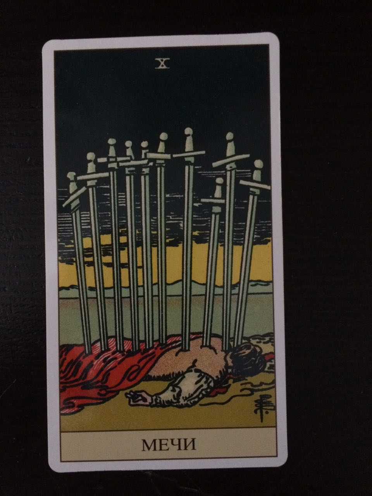

Название:
очищение. новая жизнь, трансформация мысленного потока, преобразование
Третья декада Близнецов. Упр Солнце. Маг + Влюбленые
+ процесс и события
Когда твои ценности подвергаются проверке. когда сталкиваешься с ситуацией когда надо оценить, понять, действительно ли это соответсвует твоим ценностям, принципам морали. Поступаешь ли ты действительно честно по отношению к себе?
Учитель учится быть учителем.
Одновременные окрытия, напрмер Теория вращения Луны была практически одновременно опубликована несколькоими авторами: Эйлер, Клеро и Даламбер.
Гражданский брак - компромисс когда женщина хочет официально оформить отношения, а мужчина становиться плохо при виде печати в паспорте ))
Когда человек занмается астрологией и магией, н оходит в церковь ))
+ символы (например та же паутинка и вот таких минимум 5 на каждый, если что будем вместе искать)
+ психологическая трактовка и варианты. постарайся описать нейтрально-положительные, если будет сложно - пиши с обоснованиями те как устно было, и тогда указывай в какой части Старших проблематика
+ магическое действие - как можно быстро активировать этот аркан в жизни